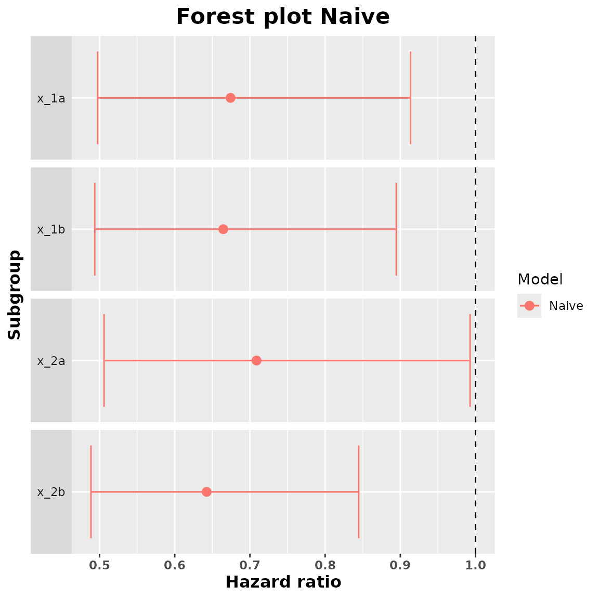
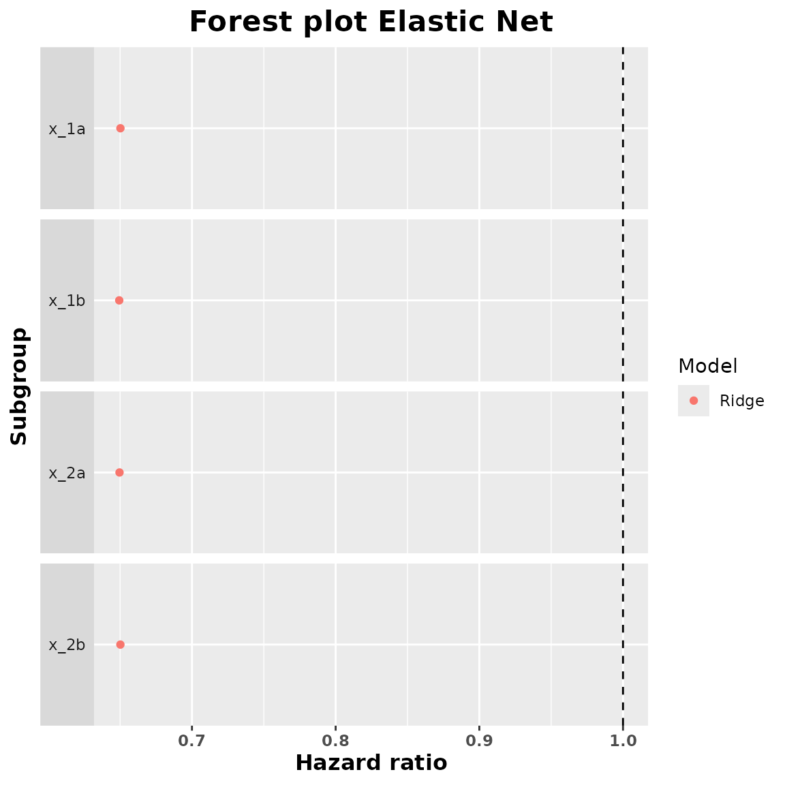

Introduction
In this vignette we are going to show with an example how to use this package.
We are going to consider a data set with time to event data and 10 categorical covariates. These categorical covariates define 25 subgroups. We are interested in estimating the subgroup treatment effect (in this case the subgroup hazard ratio) of each one of these 25 subgroups. Here we will show an example where we only use 2 categorical covariates in order to save run time. To do so we are going to use all the methods available in this package and we are going to compare their results using a forest plot.
Data analysis
As it was mentioned before we are going to use survival data as an
example of how to use the package. In our data (that should be of class
data.frame) we should have columns with the following
variables:
Treatment: factor variable with two levels (the first level represents the control group and the second one the treatment group). It is important to make sure that this variable is a factor and that the levels are in the correct order.
Response: in the case of survival data this should be a numeric variable with the survival time.
Status: in the case of survival data this variable should be present and is a numeric variable with 0 and 1 indicating whether the observation was censored or not.
Categorical variables: factor variables with information about the individuals. The levels of these variables are going to be the subgroups that we are interested in studying.
In our case we have the following structure of the data:
str(example_data)
#> 'data.frame': 1000 obs. of 14 variables:
#> $ id : int 1 2 3 4 5 6 7 8 9 10 ...
#> $ arm : Factor w/ 2 levels "0","1": 1 1 1 1 2 2 2 2 2 1 ...
#> $ x_1 : Factor w/ 2 levels "a","b": 2 2 1 1 2 1 1 2 2 1 ...
#> $ x_2 : Factor w/ 2 levels "a","b": 1 2 1 1 1 2 2 1 2 2 ...
#> $ x_3 : Factor w/ 2 levels "a","b": 2 1 2 1 2 2 2 1 2 2 ...
#> $ x_4 : Factor w/ 3 levels "a","b","c": 2 1 3 3 3 3 3 1 3 3 ...
#> $ x_5 : Factor w/ 4 levels "a","b","c","d": 4 4 1 1 4 1 3 4 4 3 ...
#> $ x_6 : Factor w/ 2 levels "a","b": 2 1 2 2 2 1 2 2 2 2 ...
#> $ x_7 : Factor w/ 2 levels "a","b": 2 1 2 2 2 1 1 2 2 2 ...
#> $ x_8 : Factor w/ 3 levels "a","b","c": 3 2 1 3 3 3 1 1 2 3 ...
#> $ x_9 : Factor w/ 2 levels "a","b": 2 1 2 2 2 1 1 2 2 2 ...
#> $ x_10 : Factor w/ 3 levels "a","b","c": 3 3 3 3 3 1 2 2 2 3 ...
#> $ tt_pfs: num 0.9795 3.4762 1.7947 0.0197 2.2168 ...
#> $ ev_pfs: num 1 0 1 1 0 0 0 0 0 0 ...We have that arm is our treatment variable,
x_1 to x_10 are the categorical covariates,
tt_pfs is the response variable and ev_pfs is
the status variable.
Once that we are sure that our data is in the correct format and contains all the necessary variables, we are going to fit the different models in order to obtain the subgroup treatment effects.
Fit Models and Check Summary
Naivepop
Let’s start by fitting the model that will lead to an overall treatment effect estimation.
naivepop_model <- naivepop(
resp = "tt_pfs",
trt = "arm",
data = example_data,
resptype = "survival",
status = "ev_pfs"
)This new naivepop object contains the fitted model, the
kind of model that was fitted, the response type of the data and the
data.
We can take the summary of this object to obtain the overall treatment effect estimate (in this case the overall hazard ratio).
summary_naivepop <- summary(naivepop_model)
summary_naivepop
#> arm1
#> 0.666919Naive
Now we are going to fit the model to obtain the naive
subgroup-specific treatment effects. We have to indicate which
categorical variables we want to consider to obtain the subgroup
treatment effects. If we add variable x_1 we are going to
obtain the subgroup treatment effect of the subgroups x_1a
and x_1b. We do the same for x_2.
naive_model <- naive(
resp = "tt_pfs", trt = "arm",
subgr = c("x_1", "x_2"),
data = example_data, resptype = "survival",
status = "ev_pfs"
)This naive object contains the fitted models for each
one of the subgroups, the main information about the coefficients
associated to treatment of these fitted models, the kind of models
fitted, the response type and the data.
We can take the summary of this object to obtain the subgroup treatment effects. We can also include a value for the confidence level in order to obtain confidence intervals for these subgroup treatment effect estimates. By default this confidence level is of 95%.
summary_naive <- summary(naive_model, conf = 0.90)
summary_naive
#> subgroup trt.estimate trt.low trt.high
#> 1 x_1a 0.6741880 0.4975147 0.9135999
#> 2 x_1b 0.6645867 0.4936858 0.8946489
#> 3 x_2a 0.7087873 0.5060265 0.9927928
#> 4 x_2b 0.6424496 0.4886396 0.8446746We can add a forest plot with the estimated treatment effects:
plot(summary_naive)
Elastic Net
We are going to fit a model considering an elastic net penalization
on the subgroup treatment interaction coefficients. Depending on the
value of alpha we are going to have different kinds of
penalties. If we put alpha to 0 we consider a ridge penalty
and if we put alpha to 1 we consider a lasso penalty. We
are going to fit both lasso and ridge.
We have to add the covars argument which indicates which
categorical variables we want to include in our model. It is important
that all the variables that are in subgr are also in
covars. The idea is that we can include many variables but
then only find the subgroup treatment effect of some of them.
ridge_model <- elastic_net(
resp = "tt_pfs", trt = "arm",
subgr = c("x_1", "x_2"),
covars = c(
"x_1", "x_2", "x_3", "x_4", "x_5",
"x_6", "x_7", "x_8", "x_9", "x_10"
),
data = example_data, resptype = "survival",
alpha = 0, status = "ev_pfs"
)
lasso_model <- elastic_net(
resp = "tt_pfs", trt = "arm",
subgr = c("x_1", "x_2"),
covars = c(
"x_1", "x_2", "x_3", "x_4", "x_5",
"x_6", "x_7", "x_8", "x_9", "x_10"
),
data = example_data, resptype = "survival",
alpha = 1, status = "ev_pfs"
)These elastic_net models contain the fitted models, the
response type, the data, the value of alpha, the design and
the dummy matrices (that are later going to be used to obtain the
subgroup treatment effects), the response and status variables and the
names of the subgroups.
We are now going to obtain the summary of these fitted objects to find the subgroup hazard ratio estimates.
summary_ridge <- summary(ridge_model)
summary_ridge
#> subgroup trt.estimate
#> 1 x_1a 0.6502065
#> 2 x_1b 0.6493804
#> 3 x_2a 0.6495783
#> 4 x_2b 0.6501798
summary_lasso <- summary(lasso_model)
summary_lasso
#> subgroup trt.estimate
#> 1 x_1a 0.6500483
#> 2 x_1b 0.6493824
#> 3 x_2a 0.6493749
#> 4 x_2b 0.6501893We can obtain a forest plot for each one of these fitted models:
plot(summary_ridge)
plot(summary_lasso)
Horseshoe model
We are now going to fit a Bayesian model with a horseshoe prior on
the subgroup-treatment interactions. Fitting this kind of models usually
takes a bit of time. We can modify some parameters like the number of
Markov chains, the number of iterations or the number of warmup
iterations (between others). The parameters that we can change are found
in the documentation of the brm function from the brms
package.
horseshoe_model <- horseshoe(
resp = "tt_pfs", trt = "arm",
subgr = c("x_1", "x_2"),
covars = c(
"x_1", "x_2", "x_3", "x_4", "x_5",
"x_6", "x_7", "x_8", "x_9", "x_10"
),
data = example_data,
resptype = "survival",
status = "ev_pfs",
chains = 2,
seed = 0,
iter = 1000,
warmup = 800,
control = list(adapt_delta = 0.95)
)Once that the model is fitted we have to check if there are
convergence problems. We might get divergent transitions after warmup.
In general if there are few divergent transitions (taking into account
the total number of iterations) and there are no other problems like
high Rhat values we can continue with our analysis.
We can obtain a summary of the posterior distributions of the coefficients of the fitted model:
horseshoe_model$fit
#> Family: cox
#> Links: mu = log
#> Formula: tt_pfs | cens(1 - ev_pfs) ~ a + b
#> a ~ 0 + arm0 + arm1 + x_1b + x_2b + x_3b + x_4b + x_4c + x_5b + x_5c + x_5d + x_6b + x_7b + x_8b + x_8c + x_9b + x_10b + x_10c
#> b ~ 0 + x_1a_arm + x_1b_arm + x_2a_arm + x_2b_arm + x_3a_arm + x_3b_arm + x_4a_arm + x_4b_arm + x_4c_arm + x_5a_arm + x_5b_arm + x_5c_arm + x_5d_arm + x_6a_arm + x_6b_arm + x_7a_arm + x_7b_arm + x_8a_arm + x_8b_arm + x_8c_arm + x_9a_arm + x_9b_arm + x_10a_arm + x_10b_arm + x_10c_arm
#> Data: data_model (Number of observations: 1000)
#> Draws: 2 chains, each with iter = 1000; warmup = 800; thin = 1;
#> total post-warmup draws = 400
#>
#> Regression Coefficients:
#> Estimate Est.Error l-95% CI u-95% CI Rhat Bulk_ESS Tail_ESS
#> a_arm0 -0.28 0.41 -1.06 0.56 1.04 95 102
#> a_arm1 -0.76 0.54 -1.83 0.29 1.03 97 118
#> a_x_1b -0.08 0.15 -0.35 0.18 1.02 347 254
#> a_x_2b 0.07 0.13 -0.20 0.32 1.00 531 313
#> a_x_3b -0.32 0.17 -0.64 0.01 1.01 382 270
#> a_x_4b -0.27 0.18 -0.64 0.07 1.00 351 282
#> a_x_4c -0.56 0.19 -0.94 -0.21 1.01 340 270
#> a_x_5b 0.04 0.29 -0.44 0.80 1.00 152 88
#> a_x_5c -0.13 0.25 -0.55 0.36 1.01 143 93
#> a_x_5d -0.22 0.23 -0.60 0.30 1.00 137 82
#> a_x_6b 0.20 0.15 -0.12 0.51 1.00 313 262
#> a_x_7b 0.07 0.16 -0.25 0.35 1.00 332 312
#> a_x_8b 0.00 0.20 -0.39 0.37 1.00 289 205
#> a_x_8c -0.01 0.18 -0.36 0.38 1.00 247 130
#> a_x_9b 0.10 0.20 -0.27 0.45 1.01 303 237
#> a_x_10b 0.18 0.22 -0.24 0.57 1.00 403 365
#> a_x_10c 0.15 0.20 -0.23 0.51 1.00 360 299
#> b_x_1a_arm -0.00 0.10 -0.20 0.19 1.00 457 316
#> b_x_1b_arm -0.01 0.11 -0.29 0.20 1.01 473 363
#> b_x_2a_arm 0.01 0.09 -0.16 0.25 1.00 325 281
#> b_x_2b_arm -0.01 0.10 -0.27 0.18 1.00 435 215
#> b_x_3a_arm -0.05 0.15 -0.43 0.09 1.02 270 225
#> b_x_3b_arm 0.04 0.13 -0.09 0.43 1.01 325 352
#> b_x_4a_arm -0.02 0.10 -0.33 0.16 1.00 381 230
#> b_x_4b_arm -0.02 0.13 -0.35 0.24 1.00 435 367
#> b_x_4c_arm 0.04 0.12 -0.10 0.42 1.01 324 255
#> b_x_5a_arm 0.10 0.25 -0.10 0.92 1.00 130 94
#> b_x_5b_arm -0.07 0.19 -0.68 0.12 1.01 293 226
#> b_x_5c_arm -0.03 0.10 -0.33 0.13 1.00 453 377
#> b_x_5d_arm 0.01 0.10 -0.26 0.22 1.00 515 366
#> b_x_6a_arm 0.02 0.11 -0.15 0.30 1.00 412 306
#> b_x_6b_arm -0.03 0.11 -0.35 0.17 1.00 384 315
#> b_x_7a_arm -0.07 0.16 -0.58 0.08 1.01 262 223
#> b_x_7b_arm 0.05 0.15 -0.13 0.55 1.01 270 220
#> b_x_8a_arm -0.03 0.11 -0.41 0.13 1.00 420 335
#> b_x_8b_arm -0.01 0.11 -0.28 0.19 1.02 336 317
#> b_x_8c_arm 0.04 0.12 -0.10 0.39 1.00 251 249
#> b_x_9a_arm -0.04 0.14 -0.48 0.12 1.01 226 258
#> b_x_9b_arm 0.04 0.16 -0.19 0.54 1.01 418 308
#> b_x_10a_arm -0.01 0.10 -0.26 0.22 1.00 440 313
#> b_x_10b_arm 0.00 0.08 -0.18 0.20 1.00 249 364
#> b_x_10c_arm -0.02 0.10 -0.28 0.14 1.01 515 341
#>
#> Draws were sampled using sampling(NUTS). For each parameter, Bulk_ESS
#> and Tail_ESS are effective sample size measures, and Rhat is the potential
#> scale reduction factor on split chains (at convergence, Rhat = 1).Apart from the fitted model this horseshoe object also
contains the data, the response, the design and dummy matrices, the kind
of response and the subgroup names.
We are now going to call summary of this object to obtain the subgroup hazard ratio estimates. With this summary we are also going to obtain the samples of the approximate posterior distribution of the subgroup hazard ratios. The estimates are just the median of this approximate posterior distribution. We should select a confidence level in order to obtain credible intervals for the subgroup treatment effects. The default confidence level is 95%.
summary_horseshoe <- summary(horseshoe_model, conf = 0.9)
summary_horseshoe
#> subgroup trt.estimate trt.low trt.high
#> 1 x_1a 0.6548058 0.5396242 0.8285532
#> 2 x_1b 0.6555175 0.5250172 0.7978729
#> 3 x_2a 0.6527021 0.5215938 0.8296019
#> 4 x_2b 0.6479122 0.5427992 0.7976948We can obtain a forest plot with the treatment effect estimates and the credible intervals.
plot(summary_horseshoe)Comparison of the Methods
A last useful thing that we can do is to compare the different treatment effect estimates. For that we are first going to generate a data set with all the estimated hazard ratios and then we are going to plot all of them in a common forest plot.
comparison_data <- compare(naivepop_model, naive_model, ridge_model, lasso_model, horseshoe_model)
comparison_data
#> $data
#> subgroup trt.estimate trt.low trt.high model
#> 1 x_1a 0.6741880 0.4693783 0.9683648 Naive
#> 2 x_1b 0.6645867 0.4663568 0.9470762 Naive
#> 3 x_2a 0.7087873 0.4743926 1.0589952 Naive
#> 4 x_2b 0.6424496 0.4636818 0.8901394 Naive
#> 5 x_1a 0.6502065 0.6502065 0.6502065 Elastic net alpha = 0
#> 6 x_1b 0.6493804 0.6493804 0.6493804 Elastic net alpha = 0
#> 7 x_2a 0.6495783 0.6495783 0.6495783 Elastic net alpha = 0
#> 8 x_2b 0.6501798 0.6501798 0.6501798 Elastic net alpha = 0
#> 9 x_1a 0.6500483 0.6500483 0.6500483 Elastic net alpha = 1
#> 10 x_1b 0.6493824 0.6493824 0.6493824 Elastic net alpha = 1
#> 11 x_2a 0.6493749 0.6493749 0.6493749 Elastic net alpha = 1
#> 12 x_2b 0.6501893 0.6501893 0.6501893 Elastic net alpha = 1
#> 13 x_1a 0.6548058 0.5217772 0.8529706 Horseshoe
#> 14 x_1b 0.6555175 0.5070357 0.8349754 Horseshoe
#> 15 x_2a 0.6527021 0.5113236 0.9065121 Horseshoe
#> 16 x_2b 0.6479122 0.5240480 0.8121235 Horseshoe
#>
#> $overall_trt
#> [1] 0.666919
#>
#> $resptype
#> [1] "survival"
#>
#> attr(,"class")
#> [1] "compare.data"Now we plot all the estimated subgroup hazard ratios and we add a vertical line indicating the value of the overall hazard ratio.
plot(comparison_data)In the case of having survival data the procedure would be analogous
but instead of having survival resptype we would have
binary. Also the response variable should be a numeric variable with 1
and 0 and there would be no status variable.